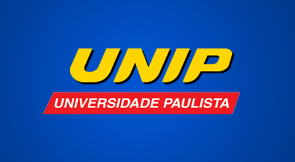

UNIP
Atualmente trabalha diariamente na realização de vídeoaulas para o Grupo Objetivo e a Universidade Paulista, executando a função principal de direção de corte. Montagem e filmagem são funções secundárias também realizadas.
Irmãos Haluli
Fruto de uma parceria com a loja Irmãos Haluli, foram realizados mais de 150 vídeos que podem ser acessados na página da loja no YouTube.
Como fazer um sabone de argila
2018
Função: Realizador.
Como fazer - Difusor como Mini Terço
2017
Função: Realizador.
Como fazer - Buquê de Chocolte
2010
Função: Realizador.